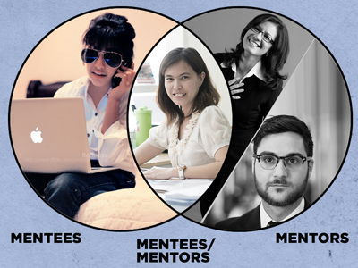

We’re at a moment in American history where major companies are being called out on their lack of gender diversity. There’s momentum behind the idea of diversifying traditionally male dominated fields, but you still hear the refrain: “We’d like to hire more women, but they don’t apply." How can we support ambitious women and make them visible?
The Women’s iLab is a blogging and social networking platform created to inspire women to innovate and lead in their professional lives. The founders challenged the students of Startup Institute Boston to design and present new ways for the iLab to fulfill their mission.
As a woman who has worked in tech and “geek culture” fields for almost a decade, the issue of gender diversity in the workplace is important to me. I’m well aware of what it’s like to be the only woman on a team, and how important it is to feel supported in your experience, even if that support is posted in an online forum from someone in a similar position on the other side of the country.
I took on the role of product manager and made it my priority to advocate for site’s end user. I created some quick personas for the three archetypical users who would connect with each other via iLab.
With these personas in mind, I took a look at the existing iLab site and identified a number of areas that I thought could be improved upon:
1. No clear call-to-action to sign up as a community member
2. Low visibility of users
3. No mention of mentoring opportunities
I created wireframes to present a site that focused on users contributions in posting and writing articles, highlighted user profiles, and featured a much bigger sign up button.
During our presentation, the new focus I had placed on users was lauded by the judges.
My team was awarded First Runner Up, and were personally commended alongside the First Place team.